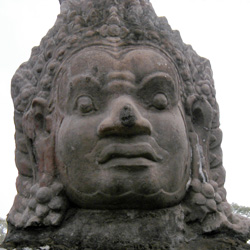

Cambodia Trav-E-Logs©
| Siem Reap
sent 27 April 2003 |
|
| back: Bangkok 1 | Gateway to the Angkor Wat Area |
================================= Please note: Some folks are reporting bounced e-mail from the Bigfoot account. If it gets bounced a second time, use the Juno.com address "dancer2SEAsia". Spam filters are set up on the Bigfoot account, so that is the prefered address. Please do not copy my e-mail in your reply as it wastes valuable time on these s-l-o-w connections. Example: four to eight computers hooked up to one 33K dial-up connection! Hope you're all enjoying life. =================================
April 24, 2003
The 10-hour trip from Bangkok to Siem Reap only took 15 hours. Got up at 5:15 AM to make the 6 AM meeting. At 6:45 I joined a group of 14 other folks walking down the street to the undisclosed location. Finally at the gas station we were told to wait. I meet Mike, a Canadian, just finished his MBA, with background in Mechanical Engineering. More folks dribbled in. Finally at 7:00 our BIG bus showed up, and we were underway by 7:05. Or so we thought. A couple more stops in town at a leisurely pace, in the middle of rush hour, and we really got under way at 7:20. The BIG bus always stayed in the slowest lane, and probably never exceeded 35 mph. Even though we were all on the same BIG bus, the price paid by the passengers varied from 100 to 500 Baht. The free market at work.
We reached the border area shortly before noon, and the back of the BIG bus was told that folks needing visas should get out here, initiate visa paperwork, and have lunch. After about 10 minutes, the driver came up to me at the very front of the BIG bus and asked me to get off, but that he would be back in an hour. I didn't understand why I was being singled out, so he told me they wanted to split the number of travelers between two restaurants and visa service locations. Mike was told to stay on the BIG bus. I guess it's a way of maximizing kickbacks -- these guys are good.
In as much as I was the last person in the visa service/ restaurant, all tables were occupied, so I asked a bearded gentleman if I could join him. Wakamatsu-san has been teaching Japanese in a private school in Bangkok, but is leaving shortly for a new teaching position in China. He tells us that an agent asked for 200 baht for the trip, but that when he showed the Japanese passport, the price jumped to 400 baht. He went to another agent and did not show his passport. I order a drink and vegetable noodle soup -- Thai style. It's good, and others are impressed.
It's hot in the restaurant, so I decide to take a short walk around outside. It feels 10 to 15 degrees cooler outside, so I stick my head back inside and announce to everyone it's cooler outside. Wakamatsu-san and several others pile out. An hour and a half after the bus dropped us off, it started pouring -- the first rain I've seen since leaving California. At 2:20, the BIG bus returns in the rain and "the left half" get back on for the short ride to the boarder crossing. It's a five-minute ride, during which time Mike tells me they were late returning because of disagreements and missing vouchers. Some of the folks had already paid for visa service, but when the receipts for transportation were picked up, the vouchers were not acknowledged. Others were told the visa charge at the border would be 1000 baht, while in actuality it is 1200 Baht at the border, 1000 Baht in Bangkok. And those folks didn't have enough Baht to pay for the visas. I'm glad I have not been part of the controversy.
 At the border we are reminded not to leave anything on the Big Thai bus. My pack was on the bottom of the pile and it is soaking wet. As we leave, the agent tells us to watch for pick pockets -- especially the children. Through the rain we are corralled to Thai passport control, then walk across the border to Cambodian visa control. We are hot, wet, and waiting in slow moving lines with all our gear on our backs. We have to walk through muddy pools of water. Finally we are herded onto a SMALL bus (See photo). We won't fit. Four more people than seats -- besides, the BIG bus had separate storage for our backpacks and luggage, while the little bus has no storage space. Zero. Finally the agent arranges for a car to take three British travelling together, and myself. Our packs fit in the trunk of the Camrey. As the SMALL bus and the Camrey pull out of the parking lot, our driver gets a phone call. We've left someone behind. We have to go back to pick up the person. More discussions, but 20 minutes later we leave with four in the back seat of a Camrey for a very grueling trip over a very heavily traveled, pot-holed road. Many of the bridges are closed, so vehicles must ford the streams (another photo). Two hours later we pass the bus, but then we all make a restaurant stop. I'm elected to move to the SMALL bus for the balance of the trip. My seat is a board with a 1/4" piece of sponge, sandwiched between the driver's helper and a real seat. My behind is black and blue by the time we get to Siem Reap, after 9 PM.
We are taken to the Skyway hotel -- obviously a sweetheart deal. It is not located near most of the other backpacker guesthouses, so you are treated like a captive audience. I negotiate a price below their minimum, paying only 150 Baht. The room is three times the size of the Bangkok hole in the wall. With private toilet and shower. I have two outlets in the room, another in the bathroom, with window and geckos.
Several of us congregate in the restaurant to plan out tomorrow's activities. The four in the car have already worked out a deal to rent it with driver/guide for tomorrow – only $25 total for all day! Mike and I make arrangements with one of the hotel staff to be driven on motorbikes for $6 each for the day, +$2 extra if we stay out for sunset. We both order a fresh fruit shake, and call it a night.
April 25-27, 2003 was spent touring the World Heritage Site of temples in the Angkor area of Cambodia. A three-day pass is $40. This may be the highlight of my 5+month journey. Over 100 temples spread out over 75 square miles. Hundreds of pictures later, my digital camera is holding out nicely. I’ll try putting a couple dozen photos on the web. But I will be unable to do this place justice in words. I suggest a web search on several of these key words “Angkor, Thom, Bayon, Leper, Banteay Srei.”
Even though the ruins are 800 to 1200 years old, the detail in many of the stone carvings is exquisite. The wonders that some civilizations have created are awe-inspiring. Unfortunately, history has always produced an equal number of destroyers. I have seen the wonders of Thakte Jamshid in Iran, the Coliseum in Rome, Cusco and the Sacred Valley in Peru, Borobudur on Java, and now Angkor in Cambodia; all these testaments to man's creativity in stone on a grandiose scale. And all were devastated by another's desire to destroy. From where do these Osama bin Ladens come? Why do so many destroy in the name of religion? What happens to the compassion and benevolence they teach? The heads are lopped off most of the statues, and gouged out from most of the stone carvings. Tens of thousands. That is a lot of angst!
I've heard several geckos in Siem Reap -- small ones in my room at the Skyway Guesthouse, and an occasional large one out at the ruins. Last night, one in the hallway outside my room! I searched, and finally saw him for about a minute. Body about 6 inches long and light tan colored. Then he scurried away. Different accent than Balinese.
I've had several great fish dishes, one with curry, one with pineapple and tomato. These fruit are in season: Bananas. Mangos. Pineapple. Jackfruit. Little green oranges (squeezed for fresh juice). Papaya. Two different fruits the size of fat grapes. Eat the pulp under the crisp, thin skin. One has a pit with clear pulp, the other three or four sections of pulp around as many seeds.
Haven't had these yet: Durian. Lychee (season starts in a couple of weeks). Salak. Mangosteen. Rambutan. And six or seven others I'm not familiar with. SEAsia is definitely a fruit-lovers paradise.
Cambodia and the people are beautiful. Yes, they try to hawk transportation and their wares, such as post cards, tour books, carvings, drinks, fruit, and meals, but unlike many other places I've been, if you tell them politely and firmly "No", they leave you alone. South America and Indonesia can certainly learn something from the Cambodians. Unfortunately, everything in Cambodia is more expensive than Thailand.
Tomorrow I head to Phnom Penh.
Bill------------------------------"Travel is Fatal to Bigotry, Prejudice, and Narrow-minded ness" .... attributed to Mark Twain
| next: Phnom Penh |
| back: Bangkok 1 |